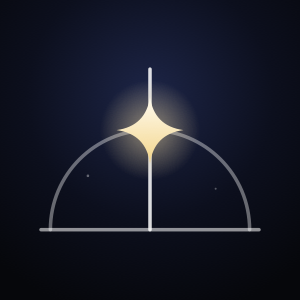
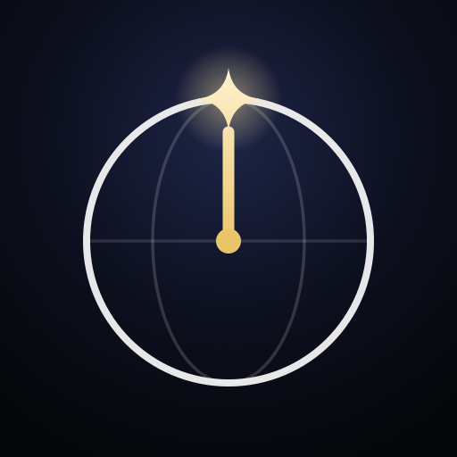

Out now
Released today at 21:00
Where gold goes
The star on the logo and the app icon. The words “Out now” in the countdown, on the Live Activity and in the Dynamic Island, from the drop until an hour after.
#1C1C1C#F4EFE4#E9C46A
How long until your next episode, in your time zone, and where it’s on. Meridian answers that at a glance, on the Lock Screen, in widgets and in the Dynamic Island.
This is its design system: the colours, type, components and surfaces, read from the app’s code. Meridian was formerly called Airstamp.
The night takes its hue from the show’s art
Night base #1C1B1A. The phone is the app’s Upcoming hero at real size, counting down in your time zone.
The countdown is the picture and the show’s own art is the colour. No legends, no keys, no screens that need explaining.
“Out”, “Expected”, “Airs in Japan”, “time not announced”. The verb says how sure a time is. No dots, traffic lights or chips to learn.
Each surface has one hero: the next episode and its large serif countdown. Everything else is quieter. The logo’s single star is the same idea.
Near-black, three strengths of white, a serif for titles and numerals and a sans for the rest. No colour outside the artwork except one gold for the logo’s star and “Out now”, and warm art never turns the page brown.
The name, logo and icon are in the app. The brand colour is Meridian Gold, on the logo’s star and “Out now”.
A meridian is the line that sets your local time. Noon is the moment the sun crosses yours.
It is also the line a star crosses at its highest point. Meridian tells you the moment your episode crosses your line, on your clock.
Longitudes: a globe drawn only by its meridians, spaced as on a sphere. Yours is at full strength and rises past the globe to a single star. In colour the star is Meridian Gold; the one-colour version, star included, works in every tint.
| Part | Construction, on a 100-unit grid |
|---|---|
| Globe | Circle r 30 at (50, 56). Not drawn: it clips the other meridians. |
| Other meridians | x = 50 + 30·sin(k·22.5°) for k = ±1, ±2, ±3, so 38.52 / 61.48, 28.79 / 71.21 and 22.28 / 77.72. Stroke 2.5, round caps, 32% opacity. |
| Your meridian | x = 50, from y 86 (the globe’s foot) to y 20 (above the rim at 26). Stroke 3.5, round caps, full strength. |
| Star | Circle r 3.5 at (50, 12). |
The smallest size is 16 px. Below 24 px the faint meridians read as texture, and the bright meridian and star carry the mark. Keep 12 units of clear space on every side: the distance from the star’s centre to the top of the grid.
The mark on neutral night: a radial gradient from #1C1C1C to #0D0D0E, the app’s night and Live Activity bases. The glyph is starlight #F4EFE4 at 62% of the canvas, centred optically, with the star in Meridian Gold. The app ships the default for both light and dark mode, plus the tinted source; scripts/make-app-icon.swift draws all three.
“Meridian” in New York Regular, the face of show titles. The mark is about 1.7 times the cap height, and the gap is about 0.3 times the mark’s width.
The night and its starlight, plus one gold, #E9C46A, kept for exactly two things: the logo’s star and the “Out now” moment. One moment, one star. Gold never says how sure a time is; the words still do that. Everything else keeps its colour from the show’s art, and controls stay white.
Contrast for gold is in Foundations, Contrast. The two options not chosen are in the archive.
The values every screen is built from, grouped by what you are choosing. Every hex, Swift name and CSS variable copies with a click.
Night Sky: a near-black base that takes a hint of the show’s art, three strengths of white for text, and no colour outside the artwork. Alpha colours are previewed on the base they are used on. The CSS variable names are this site’s own; the Swift names are the app’s.
The same three strengths on every surface. The app’s muted is the system secondary label; widgets and the Live Activity use white at 55%. Each sample sits on the base it is used on.
Each show’s night base is computed from its art. Warm hues (under 75° or over 320°) keep saturation at 0.08 or less and brightness 0.11, so the page is charcoal, never brown. Cool hues keep saturation at 0.32 or less and brightness 0.14. White text on any of them is 16 to 17.5:1.
Raw values in views, not yet named tokens.
Computed live in this page with the WCAG 2.x formula. Each alpha ink is composited over its base first. AA needs 4.5:1 for text and 3:1 for large text; AAA needs 7:1. Pairs the app never draws say “not used”.
Computing…
New York for show titles, headers and every countdown numeral. SF Pro for everything else. Numerals are always tabular, so a ticking timer never jitters. The app bundles no fonts.
This site sets New York in Newsreader, a close web serif, so it looks the same in every browser. The app uses New York.
2:10:07
Titles, headers and countdowns. Countdowns use the Light weight.
Expected Wed at 23:00
Out lines, meta, labels, buttons and lists. Dynamic Type text styles in the app; fixed sizes in widgets.
From the 88 pt hero countdown down to the 10 pt unit in the circular widget, at 1 pt to 1 px. Type your own text to try it at every size.
Six steps on a 4 pt base, drawn at twice their size.
xxs 4xs 8s 12m 16l 24xl 32| Layout rule | Value | Where |
|---|---|---|
| Page margin | l 24 | Upcoming, Show detail, the show page, Welcome |
| Page margin on Search | m 16 | Search |
| Content overlaps the art | −64 | Upcoming hero, Show detail, the show page |
| Upcoming: page, sections, rows | 40 · xl 32 · l 24 | Upcoming |
| Poster grid | 3 columns, column gap s 12, row gap m 16 | Search, Nothing scheduled |
| Back button inset | leading 16, top 58 | Show detail, the show page |
| Values outside the scale | 1, 2, 3, 6, 7, 10, 14, 40, 58, 64, 110, 120, 240 | Used directly in views |
The named radius tokens (card 14, sheet 20, widget 22) are not used by any live view.
No shadows anywhere. Depth comes from art fading into night, two scrims, and one material: Liquid Glass on the back button. iOS also draws the tab bar, search field and Dynamic Island.
Artwork arrives with withAnimation(.easeOut(duration: 0.35)), and with no animation under Reduce Motion. It is the app’s only custom animation: no springs, transitions or symbol effects. This site follows Reduce Motion the same way.
| Timing | Value |
|---|---|
| Countdown redraw in the app | TimelineView(.countdown): every second, on the whole second |
| Search grid refresh | .everyMinute |
| Search pause before it runs | 400 ms |
| Live Activity ring and bar | System ProgressView(timerInterval:), which moves with no app running |
| Widget timeline | Entries at least 5 minutes apart: one every hour and one at the drop, reloading after the next drop |
SF Symbols only. Each sits beside a word or has an accessibility label. The glyphs here are approximations.
clockUpcoming tabmagnifyingglassSearch tabgearshapeSettings tabchevron.leftBack buttonplusFollow (+) and the Follow buttoncheckmarkFollowingtvPoster placeholder; circular and rectangular widgetscalendarCircular widget, date onlyThe countdown is the product. Only the last day ticks: under 24 hours it is live to the second, stops at 0:00 and never counts up. Further out it reads 2d 4h, whole days and hours, and holds still.
Live in this page. The ticking times are worked out in your own time zone, as the app does.
Under 24 hours ticking
Out today at 22:10
More than a day, still coarse
Expected Wed at 23:00
At 24 hours it starts to tick, from 24:00:00
Airs in Japan Thu at 01:24
From the drop to an hour after outNow
Released today at 21:00
More than an hour after released
Released today at 19:00
No time announced dateOnly
Out Thu 19 Nov, time not announced
Sizes: the word “Out now” is 0.7 times the countdown’s size, “Released” and a date are 0.6 times, and the unit letters “d” and “h” are 0.5 times in the secondary ink.
Ten seconds to the drop. Watch it reach zero and turn into “Out now”, without counting up.
Only the last day ticks. Further out it reads 2d 4h, and the hour steps down without a timer. A ticking countdown keeps room for its widest value from now on (“0:00”, “00:00”, “0:00:00”, then “00:00:00”), so it never takes all the width a widget offers. VoiceOver reads “2 days 4 hours”, never “2 d 4 h”.
How sure a time is, said in the time itself. The verb is the whole system.
| Word | When | In the app | In widgets and the Live Activity |
|---|---|---|---|
| Out | An exact time: a broadcast, or a confirmed correction | “Out today at 22:10” | “Out Wed 02:00”; the band says “Out in” |
| Released | An exact time that has passed. Only exact times say it. | “Released today at 21:00” | “Released Mon 18:40” |
| Expected | An estimate: a service’s usual time, an unconfirmed correction, or your own offset. It stays “Expected” after the time. | “Expected Wed at 23:00” | “Expected Mon 09:00”; the band says “Expected in” |
| Airs in Japan, then Aired in Japan | The Japanese TV time for an anime | “Airs in Japan tomorrow at 01:24” | “Airs in Japan Fri 01:00”; VoiceOver says “just aired in Japan” |
| time not announced | Only a date is listed. Never a timer. | “Out Thu 19 Nov, time not announced” | “Time not announced”, with the day in the countdown’s place |
| Out now | From the drop until an hour after | In the countdown’s place | “Silo · Out now”; the Live Activity band and compact view |
| Nothing scheduled | A followed show with no next episode | A section title, with a reason such as “Between seasons · last episode Fri 4 Sep” | A widget row label, or the headline when nothing is scheduled |
| +3 more this week | Episodes due within 7 days that a widget can’t fit | — | Top right of medium and large widgets |
| … Lagos time | The hero names whose clock it is, once a screen | “Expected Wed at 23:00 Lagos time” | — |
Reasons for a show with nothing scheduled: “Ended”, “Between seasons”, “On hiatus”, “Waiting for news”, “Not out yet”, “No new episode announced”.
Write what is true, in the viewer’s clock and the app’s words.
| Write | Not | Why |
|---|---|---|
| Expected Wed at 23:00 | ~23:00 (est.) ● | Certainty lives in the verb. No dots or codes to learn. |
| Out today at 21:00 | Releases at 9 PM EST | Your clock, 24-hour, with the relative day first. |
| HBO · US | On HBO | A viewer in Lagos can’t watch on HBO. Say where it’s from. |
| No official stream in your country | ⚠︎ (a red icon alone) | Words, and only when the rules file says so. |
| Out Thu 19 Nov, time not announced | Thu 19 Nov · 12:00 | Noon is the data source’s placeholder. Never count down to a made-up time. |
| Starts in 2 hours · 02:00 · Apple TV | Starts in 2 hours, for a Netflix estimate | Only a sure time “starts”. An estimate is “Expected in 2 hours”. |
| … checks again each time you open it. | Updates every 6 hours | iOS doesn’t promise background refresh, so never promise an interval. |
| Lagos time | GMT+1 / WAT | Name zones by place. |
| Between seasons | RUNNING | Sentence case, in the app’s words, not the API’s. |
| +3 more this week | … (cut-off rows) | An honest count instead of shrinking everything. |
Every reusable view, rebuilt in HTML and CSS from its SwiftUI code and shown at real size, 1 pt to 1 px. Countdowns tick. Each lists its specs, what VoiceOver says, its accessibility ID and a SwiftUI call.
Glyphs approximate the SF Symbols named. Service logos are a plain letter tile; the app loads freely licensed logos while it runs. Art is drawn in CSS, so no show art appears here.
When the next episode is, big. The headline of a screen.
A countdown anywhere: app, widget or row.
CountdownText, or LiveActivityCountdown in the Live Activity
A time in a sentence, such as “Expected Wed at 23:00”.
ReleaseWording.outLine. Never a chip or a dot.
The episode and where it’s on, under a title.
The show’s art at the top of a page.
NightArtHeader, plus GlassCircleButton if the page can go back
A list of followed episodes.
Upcoming row under a section header
Shows with nothing scheduled.
Quiet grid cell; in widgets, a quiet row
Browsing, or search results.
Poster grid cell with the Follow (+) button
Narrowing a grid, one choice at a time.
Filter chip or service chip; between two catalogues, the kind switch
The one main action on a page.
Follow capsule, or the white primary button on Welcome
A preference.
System list rows; for one show, the Live Activity toggle
Nothing to show.
Empty states: say what is true and what to do. Never promise when it will update.
How sure a time is, as a colour or icon.
Don’t. Say it in words. The old source chip is archived.
The show’s key art at the top of Upcoming, Show detail and the show page, fading into a night base taken from that art.
#1C1C1C, 472 pt tall#181E24#1C1B1A, never brownArtworkPalette.night of the art; .neutral until it loadsshow-preview-art, on the show page onlyArtworkLoaderView(url: artwork?.hero, maxPixel: ShowArtwork.idealBackgroundWidth) { hero in
let base = (hero?.palette ?? .neutral).night.color
NightArtHeader(image: hero?.image, base: base, height: 500)
}The three lines that answer the question: the title, a large light serif countdown, and when it’s out, in the app’s words, naming whose clock it is.
NightInk.primary; the stack is 4 pt apartReleaseWording.outLine(naming: true) adds “… Lagos time”, except for a date only<id>-title, countdown, <id>-out, where the id is upcoming-hero, detail or show-previewTimelineView(.countdown) { context in
ReleaseHeadline(drop: drop, now: context.date, formatter: formatter, testID: "detail")
}The episode and where it’s on, as “HBO · US”, never “On HBO”. A second line says when there’s no official stream, if the rules file says so.
NightInk.muted, one line; lines 2 apartprovider-no-streamVStack(alignment: .leading, spacing: Tokens.Space.s) {
ReleaseHeadline(drop: drop, now: now)
ReleaseMeta(drop: drop)
}The countdown for one episode, in the app and every widget. Only the last day ticks: live to the second, it stops at zero. Further out it reads “2d 4h” and holds still. A date-only episode shows its day.
.widgetAccentable(): the one element that takes the tintcountdownCountdownText(drop: drop.date, confidence: drop.confidence, airdate: drop.airdate,
now: now, size: 24, tint: .white, formatter: formatter, alignment: .trailing)
.environment(\.numeralStudy, .night) // set .night: the environment default is .system
.fixedSize()The Live Activity’s timer: a range that ends at the drop, with no pauseTime. With one, WidgetKit froze the timer at its first value. Once the content goes stale the numbers stay at 0:00 and the label above says “Out now”.
min(now, drop)...drop, so a past drop reads 0:00la-countdown, la-small-countdown, la-compact-timerLiveActivityCountdown(dropDate: state.dropDate, now: now, size: 36)
// Text(timerInterval: min(now, dropDate)...dropDate, countsDown: true), no pauseTimeThe soonest episode that is out now or still to come, at the top of Upcoming: its art fading into night, then the headline and meta, overlapping the art by 64 pt.
upcoming-hero, on the buttonButton { onSelect(hero) } label: {
UpcomingHero(drop: hero, image: image, base: base, now: now, formatter: formatter)
}
.buttonStyle(.plain)
.accessibilityIdentifier("upcoming-hero")Groups Upcoming in a fixed order. One quiet line, with no count.
NightInk.mutedsection-header-out-now, -next-24, -this-week, -later, -date-only, -nothingText(section.title)
.font(.subheadline.weight(.medium))
.foregroundStyle(NightInk.muted)
.accessibilityAddTraits(.isHeader)One followed episode: art, then the hero’s facts, smaller. The countdown sits beside the title only, so the lines below get the full width.
#525252ReleaseWording.outLine, without “Lagos time”drop-row-<n>, -title, -timerow(drop, index: n, now: context.date) // private in UpcomingView
// title: .font(.system(size: 20, design: .serif))
// count: CountdownText(..., size: 24, tint: .white, alignment: .trailing)
// line: Text(ReleaseWording.outLine(drop, now: now, formatter: formatter))
// .font(.subheadline).foregroundStyle(NightInk.secondary)Followed shows with nothing scheduled, in the same three-across poster grid as Search: poster, title, and why there’s no time.
tv glyphnothing-<n>, -title, -notePosterImage(url: art?.posterThumbnail ?? art?.poster, cornerRadius: 8)
.aspectRatio(2 / 3, contentMode: .fit)
Text(ReleaseWording.quietNote(status: show.status, lastAired: show.lastAired,
formatter: formatter, now: now))
.font(.caption).foregroundStyle(NightInk.muted).lineLimit(3)With no countdown to lead with, the top of Upcoming still features a show’s art, so it never looks empty.
upcoming-spotlight, -title, -note, upcoming-emptyButton { onSelect(drop) } label: { spotlight(sections, image: image, base: base, now: now) }
.buttonStyle(.plain)
.accessibilityIdentifier("upcoming-spotlight")Each says what is true and what to do next. None promises when the app will check again.
upcoming-empty-followupcoming-emptyupcoming-failed.borderedProminent, white tint, black text, default heightupcoming-empty-follow, upcoming-empty-find, upcoming-empty, upcoming-failedButton("Find a show", action: onFind)
.buttonStyle(.borderedProminent)
.tint(.white)
.foregroundStyle(.black)
.accessibilityIdentifier("upcoming-empty-find")Picks the catalogue: TVmaze for TV, AniList for anime. Switching clears the other catalogue’s results.
Picker, darksearch-kindPicker("Kind", selection: $kind) {
ForEach(Kind.allCases, id: \.self) { Text($0.rawValue).tag($0) }
}
.pickerStyle(.segmented)Narrows the airing grid, one choice at a time, like the TV and Anime switch. The row runs to the screen’s edges and keeps the picked chip in view.
search-filters; search-filter-popular, -today, -new-seasons, -exact-timeSearchFilterRow(options: AiringFilter.options(for: kind), selection: filter, logos: Self.logos)
.padding(.top, Tokens.Space.s)A filter chip for one of 12 major services, always in the same order, with its logo on a small white tile. Shown here with a letter in place of the real logo.
search-filter-service-netflix, -prime-video, -disney-, -paramount-…// SearchFilter.service("Netflix").identifier == "search-filter-service-netflix"
AiringFilter.options(for: .tv) // [.popular, .today, .newSeasons, .exactTime] + 12 servicesFollows a show in one tap from its poster, without opening the page. Nothing is followed until you tap it.
plus, white on black at 0.55, with a white ring at 0.35checkmark, black on whitesearch-result-<n>-follow, airing-<n>-followfollowButton(result, size: 32, id: "\(id)-follow")
.padding(Tokens.Space.xxs) // overlay(alignment: .topTrailing) on the posterOne show in Search’s three-across grid. Before you type it says where and when. After you type, it gives the year, network, country and status that tell shows with the same name apart.
airing-<n> or search-result-<n>, with -title, -meta, -follow; headers search-airing-header, search-results-headerposterGrid("Results", headerID: "search-results-header", results, idPrefix: "search-result") { result in
VStack(alignment: .leading, spacing: 0) {
if !result.gridMeta.isEmpty { Text(result.gridMeta) }
if let status = result.status { Text(status) }
}
.accessibilityElement(children: .ignore)
.accessibilityLabel(result.meta)
}One plain line in place of an empty grid. A filter with no match offers the way back.
search-emptysearch-no-resultssearch-errorNightInk.muted, 24 from the top.bordered, white tintsearch-filter-empty, search-filter-clearButton("Show popular") { filter.wrappedValue = .popular }
.buttonStyle(.bordered)
.tint(.white)
.accessibilityIdentifier("search-filter-clear")The show page’s one main action. White until followed, then a dark “Following” with a check, like the poster’s (+).
pluscheckmarkshow-preview-followLabel(following ? "Following" : "Follow", systemImage: following ? "checkmark" : "plus")
.font(.headline)
.foregroundStyle(following ? .white : .black)
.frame(maxWidth: .infinity, minHeight: 50)
.background(following ? AnyShapeStyle(.white.opacity(0.12)) : AnyShapeStyle(.white), in: Capsule())What any poster on Search opens, in the same Night Sky style as Upcoming: key art with the back button, the headline, a year · network · status line, and Follow. With nothing scheduled, only the title.
show-preview-art, show-preview-title, countdown, show-preview-out, show-preview-meta, show-preview-follow.navigationDestination(for: ShowRoute.self) { route in
ShowPreviewView(route: route, client: client, anilist: anilist, rules: rules)
}Where the time came from, as one plain sentence instead of a code to learn.
NightInk.secondary, wraps, 8 below the metadetail-why, inside detail-nextText(ReleaseWording.explanation(drop, broadcastZone: drop.broadcastZone, formatter: formatter))
.font(.subheadline)
.foregroundStyle(NightInk.secondary)
.fixedSize(horizontal: false, vertical: true)For one show, turns the release-night Live Activity on or off. Flipping it schedules or cancels at once.
Toggle, tinted white at 0.6detail-live-activityToggle(isOn: $liveActivity) {
VStack(alignment: .leading, spacing: 2) {
Text("Release-night Live Activity").font(.body)
Text("Starts \(LeadTime.phrase(minutes: leadMinutes)) before, on your Lock Screen")
.font(.footnote).foregroundStyle(NightInk.muted)
}
}
.tint(.white.opacity(0.6))The last three aired episodes, newest first, under an “Episodes” header. TV shows only: anime has none, so the block is hidden.
detail-episode-1 to -3EpisodeRows(episodes: episodes, ink: .white, formatter: formatter)The quiet actions at the foot of Show detail. Unfollow is the only destructive action, and it always asks first.
NightInk.muted, 16 apartdetail-report, detail-unfollowButton("Unfollow", role: .destructive) { confirmingUnfollow = true }
.confirmationDialog("Stop following \(drop.showName)?", isPresented: $confirmingUnfollow,
titleVisibility: .visible) {
Button("Unfollow", role: .destructive) { onUnfollow(); dismiss() }
}A system list, forced dark: the time zone in use, the Live Activity lead time and permission, and credits.
#000000, cells #1C1C1E. Set by iOS, so a shade off the #1C1C1C Night Sky pagessettings-zone, settings-lead, settings-la-permission, settings-la-open, settings-credits, settings-debugSection("Time zone") {
LabeledContent("Automatic", value: ReleaseWording.zoneSummary(formatter, at: .now))
}
Section {
Picker("Live Activity lead time", selection: $leadMinutes) {
ForEach(LeadTime.choices, id: \.self) { Text(LeadTime.phrase(minutes: $0)).tag($0) }
}
permission
} footer: {
Text("The release-night Live Activity starts this long before an episode is out.")
}Where the data comes from, its licences, and that nothing is collected.
credits-tvmaze, credits-tvmaze-link, credits-anilist, credits-artwork, credits-logos, credits-licence, credits-no-dataNavigationLink("Credits & licences") { CreditsView() }
.accessibilityIdentifier("settings-credits")One screen, shown once: what the app answers, the time zone it found, and a way to follow the first show.
#1C1C1C; this week’s show art in three drifting rows over the top 60%, fading out above the logo (placeholder tiles here); logo, 16, headline, 12, zone, 32, buttons 12 apart; sides and bottom 24.borderedProminent, white tint, black textwelcome-logo, welcome-zone, welcome-find, welcome-laterWelcomeView(client: client, anilist: anilist, rules: model.rules,
onFind: { welcomeDone = true; tab = .search }, onLater: { welcomeDone = true })Art is loaded while the app runs and kept on the phone, never stored in the code. Without art: a plain surface, never a broken image.
tv, title 3PosterImage(url: result.poster, cornerRadius: 8)
.aspectRatio(2 / 3, contentMode: .fit)The countdown away from the app. These are the app’s own views, rendered by its tests at their real point size, with each show’s art loaded from TVmaze and AniList.
One widget, “Next episode”: how long until your next episode, in your time zone, and where it’s on. It comes in six families.
#1C1C1C with the show’s art across the top (all of it on small and medium, 62% on large), fading clear, then to 0.7, then to the base. The service is tagged top left (“HBO · US”), and “+N more this week” top right when shows don’t fit. Small shows one show, medium three, large four.tv glyph, and “2d”, “4h” or “38m” in the gap. Rectangular: “Expected Wed 23:00”, then the name, then the countdown and service.widget-inline · widget-circular-ring, -value · widget-rect-meta, -title, -countdown, -provider · widget-small-provider, -title, -countdown, -out · widget-medium-row-1 to -3, widget-large-row-1 to -4, widget-more, widget-medium-empty, widget-large-emptyThe renders are the app’s own views. Each show’s key art and posters load from TVmaze and AniList behind them, cropped as the phone crops them; if an image can’t load, a neutral placeholder shows instead.
In these renders the medium widget shortens a long title in a lower row. The certainty word stays.
On release night, for the shows you choose, from the lead time (2 hours by default). Night base #0D0D0E, the show’s art on the right edge, and a plain-words label over a serif countdown. At the drop the content goes stale and every view says “Out now”, with no app running.
pauseTime: with one, it was drawn frozen. The Lock Screen banner is at most 160 pt tall at 360 wide, even with the longest name. The minimal view fits 28 pt when the island is limited. The payload stays well under 4 KB: IDs, title, date and a short service name. At most 3 are scheduled at once.la-title, la-more, la-details, la-label, la-countdown, la-time, la-previous, la-compact-poster, la-compact-timer, la-minimal, la-expanded-title, -art, -countdown, -bar, la-small-title, la-small-countdown| Presentation | Spec |
|---|---|
| Lock Screen banner | Padding 16 × 14. 112 pt kept clear on the right for the art (44% of the width, fading leftwards) or a faint initial. Title New York Medium 19 (with “+ 1 more” in 13 semibold) · details 13, muted · label 13 semibold, 12 above · countdown Light 36 · time line 13 medium, secondary |
| Compact | Leading: a 24 poster mark, radius 6, or the initial on a white disc at 0.16. Trailing: the timer in New York Medium 15, at most 60 wide; “Out now” in SF semibold 14 |
| Minimal | A 24 pt ring (stroke 2.5, track white at 0.18, fill white) that fills from the start to the drop, around a circular poster mark; full at “Out now” |
| Expanded | Leading: title New York Medium 18 over details 13 · trailing: art 50 × 50, radius 12 · bottom: label 14 and countdown Light 34 on one baseline, then a 4 pt bar filling to the drop, with the local time (13 medium, tabular) at its end. 16 pt sides, so it clears the island’s corners |
| Small (Watch, Mac, CarPlay) | An 18 poster mark and title Medium 15 · label 11 semibold · countdown Light 24 · time line 11 medium; padding 12 |
The renders are the app’s own views. Each show’s art loads from TVmaze and AniList behind them, cropped as the phone crops it; if an image can’t load, a neutral placeholder shows instead.
What the app does so everyone can read it, the files to take away, and where the old name still appears.
| Area | What the app does | Status |
|---|---|---|
| Meaning without colour | Certainty is a word: “Out”, “Expected”, “Airs in Japan”. No status colour is left in the live screens. | Done |
| VoiceOver phrases | Widgets and the Live Activity read one full phrase built from the service (“Silo, in 2 days 4 hours, Apple TV”). “HBO · US” is read “HBO US”, and “2d” is read “2 days”. | Done |
| Headings | Show titles and section headers are marked as headings. | Done |
| Hit targets | Filter chips are 34 tall with a 44 tall tap area. The Follow (+) is 32 inside 44 × 44. The back button is 44, Follow 50 tall, “Not now” 44. | At least 44 |
| Contrast | See the contrast matrix. | See matrix |
| Dynamic Type | Countdowns and body text scale. Serif titles and headers use fixed sizes (32, 34, 28, 22, 20) and don’t grow yet. | Open |
| Reduce Motion | The one animation, the 0.35 s art fade, is skipped. | Done |
| Tinted and Always-On | Only the countdown takes a widget’s tint. Always-On hides the art and dims everything else. | Done |
| Decorative images | Art, posters, logos and the poster mark are hidden from VoiceOver. On the show page the art reads “Silo artwork, image”. | Done |
Done on 2 November 2026. Every place below now says Meridian, and so do the targets and folders, the bundle ID (dev.chime.meridian), the App Group and the GitHub repo (ChimeXXD/meridian). The app icon is the Longitudes mark.
DISPLAY_NAME = MeridianConfig/Base.xcconfig:5 (PRODUCT_NAME in project.yml is internal)
“Meridian”Meridian/Features/Welcome/WelcomeView.swift:13
“Live Activities are off in Settings › Meridian”Meridian/Features/Settings/SettingsView.swift:60
“Meridian is open source under the MIT licence”Meridian/Features/Settings/SettingsView.swift:95
“Meridian collects no data. Nothing leaves your phone except requests to TVmaze, AniList and Wikimedia.”Meridian/Features/Settings/SettingsView.swift:97
“Nothing scheduled for your shows yet. Meridian checks again each time you open it.”Meridian/Features/Upcoming/UpcomingSections.swift:81
“Meridian checks again each time you open it.”Shared/Widgets/WidgetText.swift:53
The Debug status “Live Activities are off in Settings › Meridian.”, and the setup-check titleMeridian/Features/Debug/DebugMenuView.swift:77 · Meridian/App/PlaceholderView.swift:12
User-Agent “Meridian/1.0 (https://github.com/ChimeXXD/meridian)”Meridian/Services/Artwork/ArtworkLoader.swift:31
The widget’s name in the gallery stays “Next episode”, which describes what it shows.
Kept for reference. Nothing here is drawn by a live screen. Source paths on this site start inside the app’s folder or at Shared/.
A glyph and word capsule for a time’s source. Replaced by the certainty words, because its colours needed a legend.
source-chip; VoiceOver “Source: Broadcast”// Don't: SourceChip(source: drop.source, confidence: drop.confidence)
// Do: Text(ReleaseWording.outLine(drop, now: now, formatter: formatter))The card row from before Night Sky. It is the only view that shows a delay (“Delayed”, with the old time struck through), which is worth bringing to the live row.
#1C1C1E, radius 14, padding 16 · countdown 28 SF Heavy · the no-stream line in red with exclamationmark.circledrop-row-<n>, provider-label, section-header-<id>// Archived: DropRow(drop: drop, index: 1, now: now)
// Live: UpcomingView.row(_:index:now:)Only the archived source chip, card row and service label use these. Light and dark values are listed.
Four directions were tried for countdown numerals. Night won. The others are still in the code, drawn only by an old preview. The environment default is still the system style, so each live countdown sets Night itself.
2:10:07
Night, in use. New York Light, tabular, white.
2:10:07
A · System. SF Pro Heavy, tabular.
2:10:07
B · Mono. SF Mono Medium, lime #C6F432.
2:10:07
C · Serif. New York Semibold, warm yellow #FFC940.

